1. 암호 개요 (원본 p.4-20)
정보보안의 3대 특징은 기밀성(Confidentiality)(인가된 사람만이 정보자산에 접근 가능), 무결성(Integrity)(비인가자로부터 데이터가 변조되지 않음), 가용성(Availability)(장애 없이 정상적으로 운영됨)이며, 암호는 이 중 주로 기밀성·무결성·인증을 보장하기 위한 핵심 기술이다.
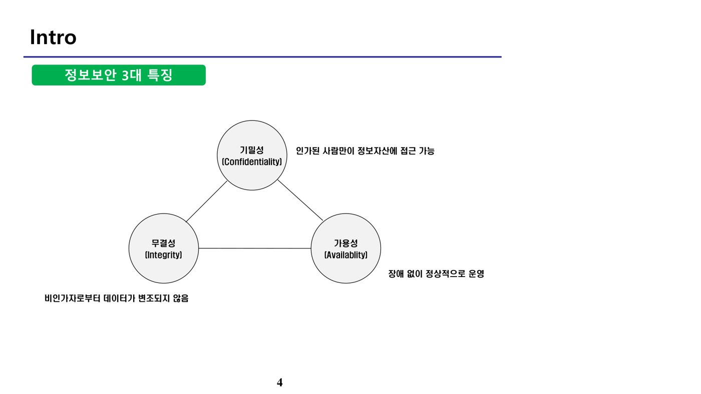
가. 암호화 대상
| 구분 | 대상 | 내용 | |
|---|---|---|---|
| 데이터 | 개인정보 | 살아 있는 개인에 관한 정보. 성명·주민등록번호·영상 등으로 개인을 알아볼 수 있거나, 그 자체만으로는 알아볼 수 없어도 다른 정보와 쉽게 결합하여 알아볼 수 있는 정보를 포함 | |
| 기밀정보 | 사업상의 핵심 기술·자산 | ||
| 형태 | 저장 | 파일시스템 | 파일시스템 내의 파일 및 폴더 |
| 데이터베이스 | 개인정보·기밀정보 파일의 집합 | ||
| 저장매체 | 디스크 드라이브, USB | ||
| 전송 | 네트워크 | 송수신 데이터 |
나. 암호 공격 방법
| 구분 | 내용 |
|---|---|
| 능동적 공격 | 변경(Modification), 재생 공격(Replay) 등 메시지를 직접 변조하는 공격 — 가용성·무결성 침해 |
| 수동적 공격 | 도청, 트래픽 분석(Traffic Analysis) 등 메시지를 변경하지 않고 모니터링하는 공격 — 기밀성 침해 |
참고로 부인(Repudiation)은 메시지를 보낸 사실 자체를 부정하는 것으로 부인방지 서비스가 이를 방지하며, 무결성 침해에는 해당하지 않는다.
다. 암호 분석(공격) 방법
| 구분 | 내용 |
|---|---|
| 암호문 단독 공격(Ciphertext Only Attack) | 같은 알고리즘으로 암호화된 암호문을 알고 있는 경우 |
| 알려진 평문 공격(Known Plaintext Attack) | 일정량의 평문에 대응하는 암호문을 알고 있는 상태에서, 암호문과 평문의 관계로부터 키를 추정하여 해독하는 공격 방법(기지 평문 공격) |
| 선택 평문 공격(Chosen Plaintext Attack) | 해독자가 선택한 평문 메시지와, 비밀키로 생성된 그 평문에 대한 암호문을 알고 있는 경우 |
| 선택 암호문 공격(Chosen Ciphertext Attack) | 해독자가 선택한 목적 암호문과, 비밀키로 생성된 그 암호문의 해독된 평문을 아는 경우 |
라. 암호 알고리즘 분류
암호 알고리즘은 원리(혼돈·확산)에 기반해 동작한다. 혼돈(Confusion)은 암호문과 비밀키의 관계를 숨기고, 확산(Diffusion)은 평문의 통계적 성질을 암호문 전반에 숨긴다. 종류로는 전송(고유식별번호·비밀번호·바이오정보) 시 사용하는 양방향 암호화(대칭키·비대칭키), 저장(비밀번호·바이오정보) 시 사용하는 단방향 암호화(해시)로 구분된다.
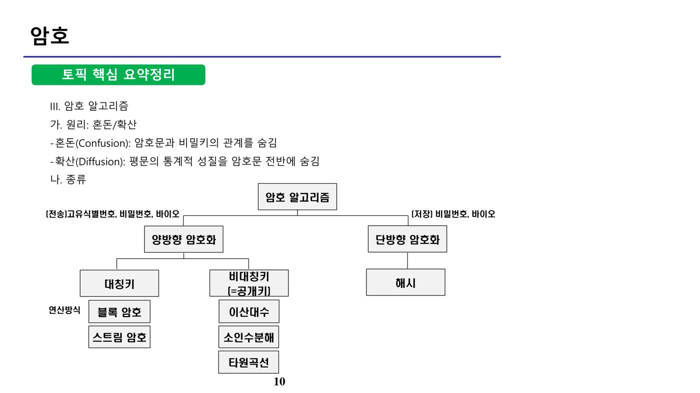
대칭키의 연산 방식에는 블록 암호·스트림 암호가 있으며, 비대칭키(공개키)의 연산 방식에는 이산대수·소인수분해·타원곡선이 있다.
마. 개인정보의 암호화 (법령 기준)
「개인정보의 안전성 확보조치 기준」 제7조(개인정보의 암호화)에 따르면, 개인정보처리자는 고유식별정보·비밀번호·바이오정보를 정보통신망을 통해 송신하거나 보조저장매체 등으로 전달하는 경우 이를 암호화해야 한다. 비밀번호·바이오정보는 저장 시에도 암호화하되, 비밀번호는 복호화되지 않도록 일방향(단방향) 암호화하여 저장해야 한다. 반면 주민등록번호와 같은 고유식별정보는 인터넷 구간·DMZ 저장 시 암호화 의무가 있으며 이는 복호화가 가능한 양방향 암호화로 처리된다. 신용카드정보는 여신전문금융업법 등 별도 법령의 규율을 받으며 개인정보보호법상의 암호화 의무 대상 목록(고유식별정보·비밀번호·바이오정보)에는 직접 포함되지 않는다.
위장 공격(Masquerade Attack)으로 인한 인증 보안 위협을 방지하기 위해서는 신원을 확인할 수 있는 암호 기술이 필요하다. 공개키 암호, 메시지 인증 코드, 디지털 서명은 송신자의 신원을 확인할 수 있는 인증 기능을 제공하지만, 일방향 해시 함수는 메시지의 무결성만 검증할 뿐 그 자체로는 송신자 신원을 확인하는 인증 기능을 제공하지 못한다.
바. 대칭키와 비대칭키 암복호화 방식
대칭키 암복호화는 평문 M을 키 K와 암호 알고리즘으로 암호화해 암호문 C를 생성하며, 암호화 전에는 누구나 알아볼 수 있는 메시지가 해독 방법(키)을 가진 사람만 알 수 있는 메시지로 바뀐다.
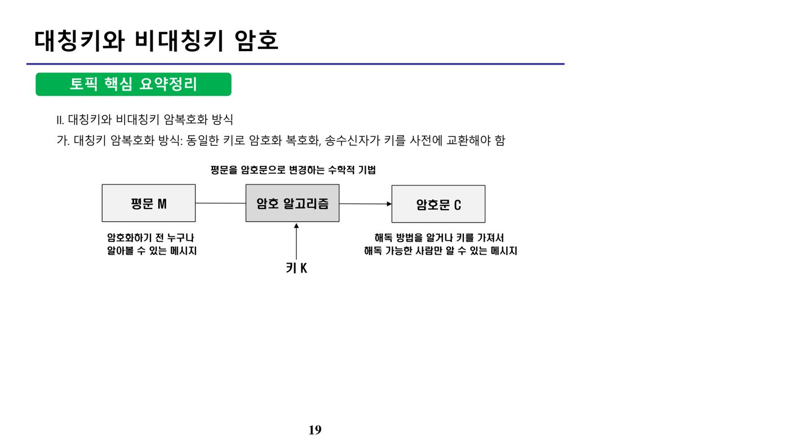
비대칭키(공개키) 암복호화 방식은 사용자가 공개키와 그에 대응하는 개인키(비밀키)를 보유하는 것을 전제로 한다. 공개키는 누구에게나 공개되며 개인키는 소유자만 알 수 있다. ① A의 공개키로 암호화하면 A의 개인키로만 복호화할 수 있어 A만 메시지를 볼 수 있는 기밀성을 제공하고, ② A의 개인키로 암호화하면 A의 공개키로만 복호화할 수 있어 A가 보낸 메시지임을 인증하는 효과를 제공한다.
2. 대칭키와 비대칭키 비교 (원본 p.21-27)
| 장단점 | 대칭키 | 비대칭키 |
|---|---|---|
| 장점 | 암복호화 속도가 빠름 | 키관리·키분배가 용이함, 일반적으로 대칭키에 비해 키 길이가 짧음 |
| 단점 | 관리해야 할 키의 개수가 사용자 수(n)에 비례해 증가 — 키의 수 = n(n-1)/2, 키 교환이 필요하며 일반적으로 비대칭키에 비해 긴 키 길이가 요구됨 | 대칭키에 비해 암복호화 속도가 느림 |
| 알고리즘 | DES, 3DES, AES, SEED, ARIA, RC4, IDEA, Skipjack | RSA(소인수분해), ElGamal(이산대수), ECC(타원곡선) |
| 활용 | 기밀성 | 기밀성, 부인봉쇄 |
대칭키 암호시스템에서 n명이 서로 암호통신을 하기 위해 비밀리에 관리해야 하는 키의 총 개수는 n(n-1)/2로 계산된다. 예를 들어 100명이 있는 조직이라면 100×99/2 = 4,950개의 키를 관리해야 한다. Skipjack은 대칭키 알고리즘이며, RSA·ElGamal과 함께 비대칭키 알고리즘으로 분류하는 것은 오답이다.
공개키 암호로 기밀성을 제공하려면 송신자는 수신자의 공개키로 메시지를 암호화해서 전송해야 한다 — 그래야 수신자의 개인키로만 복호화가 가능해 오직 수신자만 메시지를 볼 수 있기 때문이다. 반대로 송신자 자신의 개인키로 암호화하면 이는 기밀성이 아니라 송신자 인증(전자서명)의 효과를 갖는다.
RSA는 소인수분해(Integer Factorization)의 어려움에 기반한 비대칭키 암호시스템으로, 모듈러(Modular) 연산과 오일러 정리(Euler's Theorem), 대치(Substitution) 개념과 관련이 깊다. 초기벡터(Initial Vector)는 블록 암호 연산모드(CBC 등)에서 사용되는 개념으로 RSA와는 관련이 없다. RSA에 대한 공격으로는 소인수분해 공격(모듈로 값 1024비트 이상 권장), 선택 암호문 공격(RSA의 곱셈 성질을 이용), 관련된 메시지 공격(두 암호문이 선형 관계일 때 유효 시간 내 평문을 구함) 등이 있으며, 평문 공격은 공격자가 평문에 대한 정보를 알고 있어야 성립 가능하다.
3. 블록 암호 (원본 p.28-37)
블록 암호는 평문을 블록(Block) 단위로 암호화하는 대칭키 암호 시스템이다. 연산모드로 ECB·CBC·CFB·OFB·CTR이 있으며, 내부 구조로 Feistel·SPN 구조가 있다.
가. 연산모드(운용모드)
ECB(Electronic CodeBook) 모드는 암호화하려는 메시지를 1블록씩 나누어 각각 독립적으로 암호화하는 방식이다. 모든 블록이 같은 암호화 키를 사용하므로 동일한 평문 블록은 항상 동일한 암호문 블록으로 나타나 보안에 취약하다.
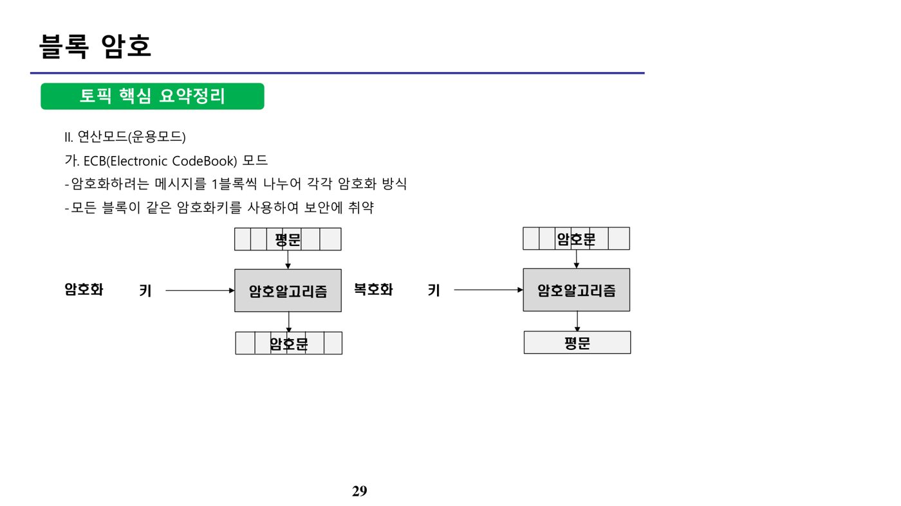
CBC(Cipher Block Chaining) 모드는 단순 블록 암호화 결과를 다음 블록과 XOR 연산하며, 첫 블록에는 초기화 벡터(IV, Initial Vector)를 사용한다. 병렬 처리가 불가능하며 하나의 블록에서 오류가 발생하면 다른 블록으로 전파된다.
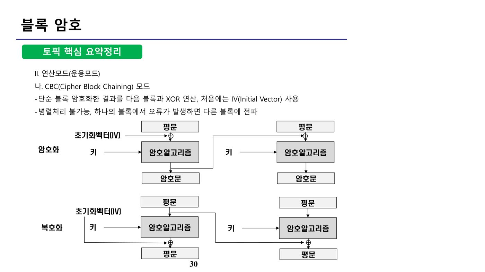
CFB(Cipher FeedBack) 모드는 이전 블록의 암호화 출력문을 평문 블록과 XOR 연산한 다음, 그 결과를 다음 암호화 단계의 입력값으로 사용한다. 암호화는 순차적으로 진행되지만 복호화는 병렬로 진행할 수 있으며, 이전 단계 암호문의 오류는 이후 모든 암호문에 영향을 준다.
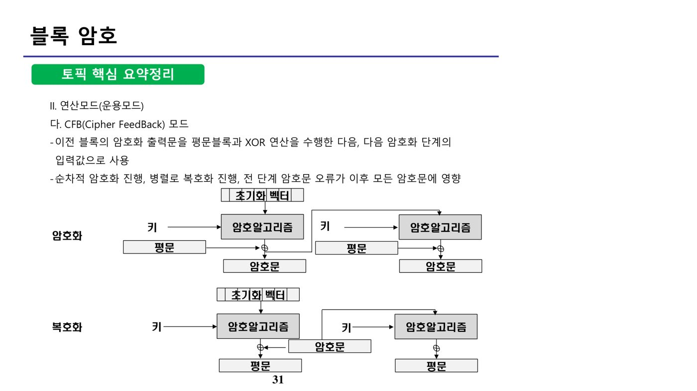
OFB(Output FeedBack) 모드는 암호 알고리즘의 출력을 다음 입력으로 사용하며, 블록 암호를 동기식 스트림 암호로 변환한다. CFB와 유사하지만 피드백되는 입력이 암호문이 아니라 알고리즘 출력이라는 점이 다르며, 암호문의 1비트 오류가 대응되는 평문의 1비트에만 영향을 주므로 잡음(noise)이 발생하기 쉬운 통신 채널에서 스트림 형식 데이터를 전송할 때 주로 사용된다. XOR 연산의 대칭성으로 인해 암복호화 과정이 동일하다.
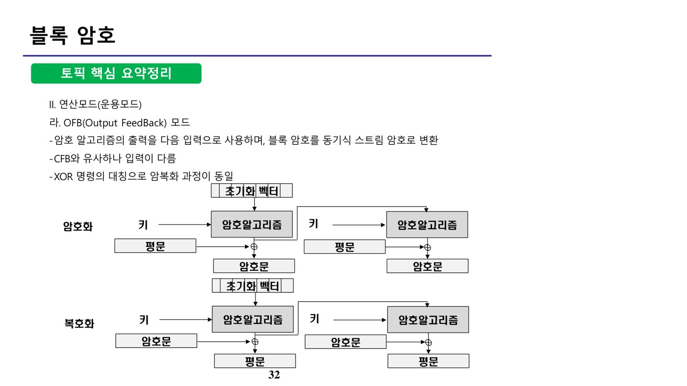
CTR(Counter) 모드는 카운터를 사용해 블록 암호를 스트림 암호로 바꾸는 운영 모드다. 각 블록마다 현재 블록이 몇 번째인지 나타내는 카운터 값을 난수와 결합해 블록 암호의 입력으로 사용하고, 그 출력을 암호화하려는 평문과 XOR한다. 이전 블록 처리 결과에 종속되지 않으므로 병렬 수행이 가능하며, 복호화 과정은 평문과 암호문의 위치만 바뀔 뿐 암호화와 동일한 구조를 사용한다.
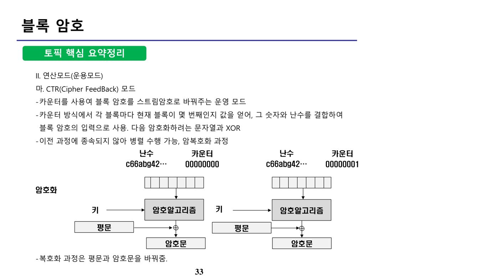
나. 블록 암호의 구조
Feistel 구조는 평문의 좌우를 나누어 키와 조합한 뒤 XOR 연산을 거쳐 좌우를 교환하는 구조로, 암복호화 과정을 동일한 구조로 구현할 수 있어 구현이 간단하다는 장점이 있다. 대표 알고리즘으로 DES(Data Encryption Standard), SEED, BLOWFISH, KASUMI 등이 있다.
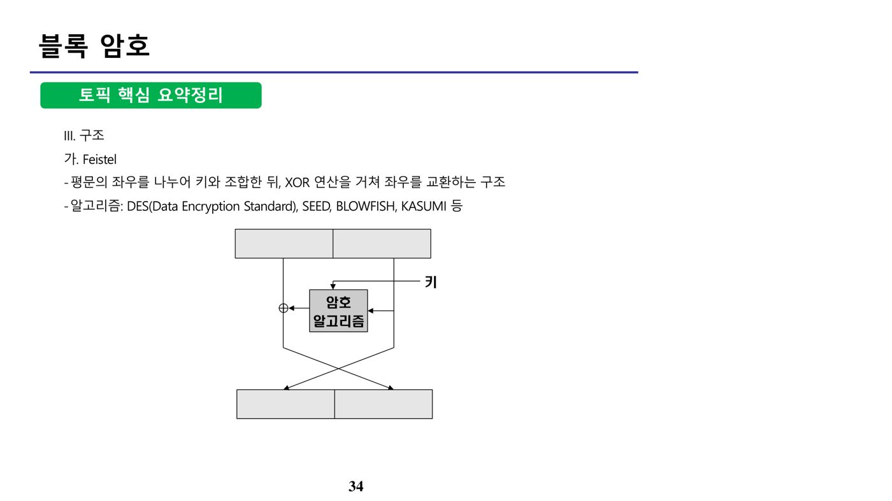
SPN(Substitution-Permutation Network) 구조는 대치(Substitution) 계층과 확산(Diffusion, Permutation) 계층을 라운드(Round) 단위로 반복하는 구조다. 병렬 연산이 가능하지만 복호화 모듈을 암호화 모듈과 별도로 구현해야 한다는 특징이 있다. 대표 알고리즘으로 AES(Advanced Encryption Standard), ARIA 등이 있다.
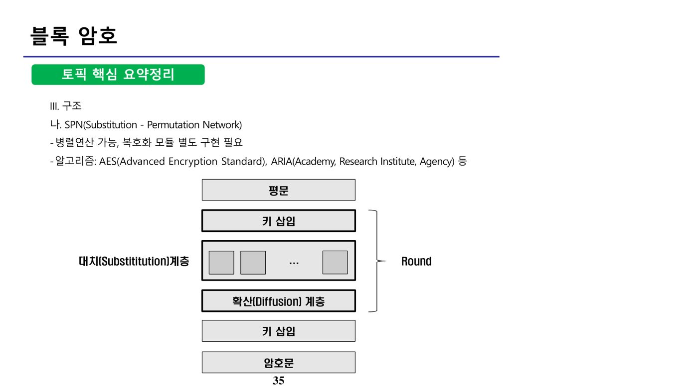
NIST로부터 AES로 선정된 Rijndael 알고리즘은 DES보다 안전하고 3중 DES보다 효율적이라는 선정 조건을 만족하며, 키 크기와 라운드 수를 가변적으로 설정할 수 있어 소프트웨어·하드웨어·펌웨어 구현에 모두 적합하다. 다만 Rijndael은 Feistel 구조가 아니라 SPN 구조를 사용한다는 점에 유의해야 한다.
4. 해시함수 (원본 p.38-45)
가. 해시(Hash) 함수의 개념
해시 함수는 임의의 길이를 갖는 메시지를 입력하여 고정된 길이의 해시값을 출력하는 함수로, 일방향 암호화에 해당한다. 대표적인 알고리즘으로 MD5, SHA-1, SHA-2가 있다. 해시 함수의 3대 특징은 다음과 같다: 고정된 길이 출력(입력값의 길이에 관계없이 일정한 길이의 해시값 출력), 역추적 불가(일방향성)(해시값에서 원래 입력값을 추정하기 어려움), 충돌 방지(다른 입력값에서 같은 해시값이 출력되는 것은 계산상 불가능). 여기서 해시값을 계산하는 것 자체는 쉬워야 하며(빠른 연산이 요구됨), "계산하기 어려워야 한다"는 서술은 해시 함수의 특성과 반대되는 오답이다.
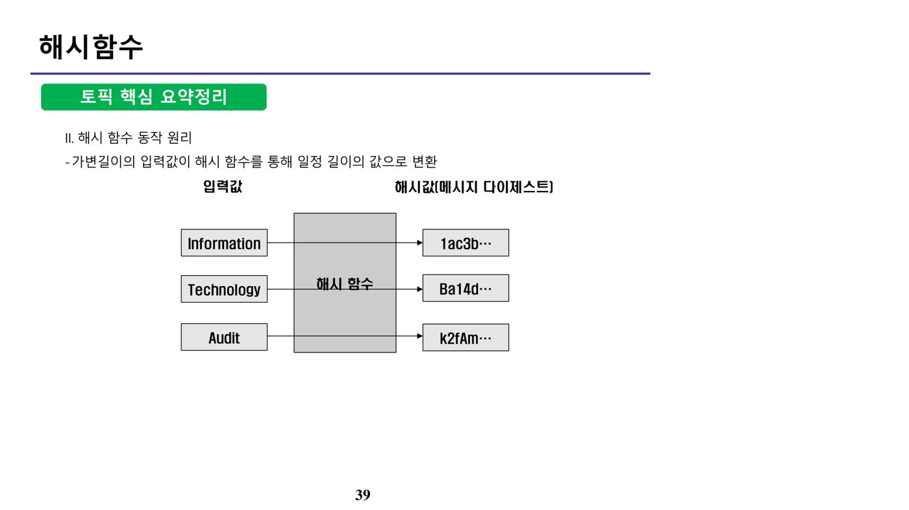
해시 함수가 만족해야 할 3가지 계산상 불가능 조건은 다음과 같다: 가. 해시값으로 원래 입력값을 추정하는 것(일방향성, Pre-image resistance), 나. 입력값과 해시값이 주어졌을 때 같은 해시값을 갖는 또 다른 입력값을 구하는 것(제2 역상 저항성, Second pre-image resistance), 다. 같은 해시값을 갖는 두 개의 다른 입력값을 발견하는 것(충돌 저항성, Collision resistance). 이 세 조건 모두를 만족해야 안전한 해시 함수로 인정된다.
나. 해시 함수의 보안 위협
Rainbow Table은 해시 함수를 이용해 변환 가능한 모든 해시값을 미리 저장해 놓은 표로, 해시값으로부터 원래의 평문을 역으로 추출해내는 데 사용된다. Birthday Attack은 임의로 모인 23명 중에서 생일이 같은 사람이 있을 확률이 50% 이상이 된다는 생일 모순(Birthday Paradox)에 근거해 해시 함수를 공격하는 방법으로, 반복적인 대입을 통해 충돌이 발생하는 또 다른 입력값을 찾아낸다.
다. 해시 함수 강화방안
솔트(Salt)는 기존 해시 알고리즘에 임의의 값을 추가하여, 같은 입력값이 들어와도 다른 결과값(해시값)이 나오도록 하는 방법이다. 키 스트레칭(Key Stretching)은 입력값에 대한 해시값을 여러 번(N번) 반복하여 해시 함수를 통과시키는 방법으로, 두 방법 모두 Rainbow Table 공격 등을 무력화하는 데 사용된다.
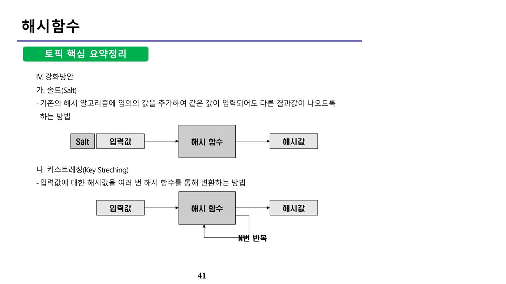
UNIX 시스템의 패스워드 암호화에는 솔트(Salt)가 활용된다. 사용자의 패스워드에 솔트값을 덧붙여 암호 함수의 입력을 정해진 길이로 만들며, 이를 통해 패스워드 길이가 늘어나고 동일한 패스워드를 사용하는 사용자라도 서로 다른 암호화된 값을 갖게 되는 효과가 있다. 키(Key)는 암호 알고리즘에 적용되는 요소, 해시값(hash value)은 해시 알고리즘을 통해 생성된 메시지 다이제스트 자체를 의미하므로 솔트와는 구분된다.
5. 전자서명 (원본 p.46-53)
전자서명은 전자적 형태의 자료를 전송할 때 송신자의 신원을 확인하고 메시지의 무결성을 검증하는 기술이다. 제공 서비스는 무결성(데이터의 허가되지 않은 위변조 방지), 사용자 인증(송신자가 메시지를 전송하였음을 증명), 부인방지(서명한 사람이 서명한 사실을 부인할 수 없음)이며, 변경 불가·재사용 불가의 특성을 갖는다. 다만 전자서명 자체는 메시지 내용을 암호화하지 않으므로 기밀성은 제공하지 않는다는 점에 유의해야 한다.
가. 전자서명의 원리
송신 과정에서는 메시지를 해시함수로 처리해 메시지 다이제스트를 출력한 다음, 송신자의 개인키로 서명하여 원문과 함께 전송한다.
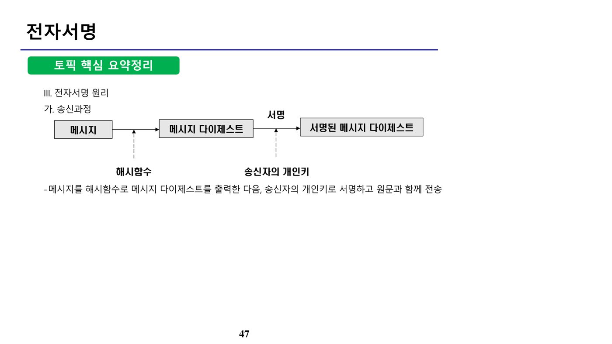
수신 과정에서는 송신자의 공개키로 서명된 메시지 다이제스트를 복호화하여 송신자가 보낸 메시지임을 인증하고, 원문 메시지를 다시 해시함수로 처리해 얻은 해시값과 복호화된 메시지 다이제스트를 비교하여 무결성을 검증한다.
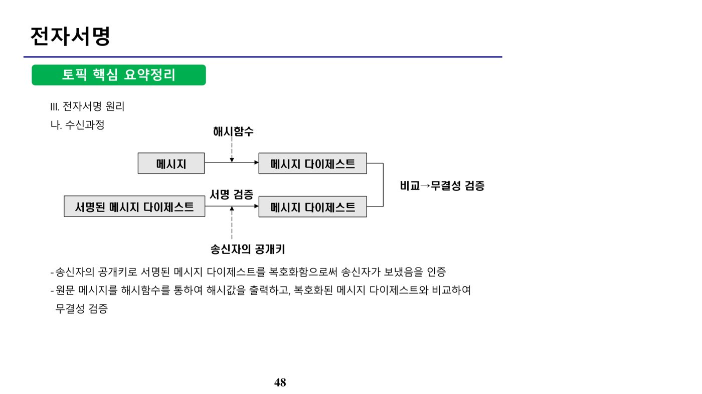
전자서명에서 사용하는 해시를 통한 메시지 다이제스트 생성 기법은 SHA다. RSA·ECC·DSA는 공개키(비대칭키) 암호 알고리즘으로, 서명 자체를 생성·검증하는 데 사용되지만 다이제스트를 생성하는 해시 함수는 아니다.
나. 전자서명의 응용
전자봉투는 암호화 속도가 빠른 대칭키로 메시지 원문을 암호화하고, 그 대칭키 자체는 공개키 암호 알고리즘(수신자의 공개키)으로 암호화하여 함께 전송하는 방식이다. 수신자는 자신의 개인키로 전달받은 키를 복호화한 뒤, 그 키로 암호문을 복호화한다.
이중서명은 개인정보 노출을 최소화하기 위해 판매자에게는 구매 정보만, 카드사에는 결제 정보만 볼 수 있도록 구성한 전자서명 방식이다. 구매자가 구매정보와 결제정보를 각각 전자서명하고 전자봉투로 묶어 전송하면, 판매자는 구매정보만 처리하고 결제정보는 카드사로 전달되어 각 주체가 필요한 정보만 열람할 수 있다.
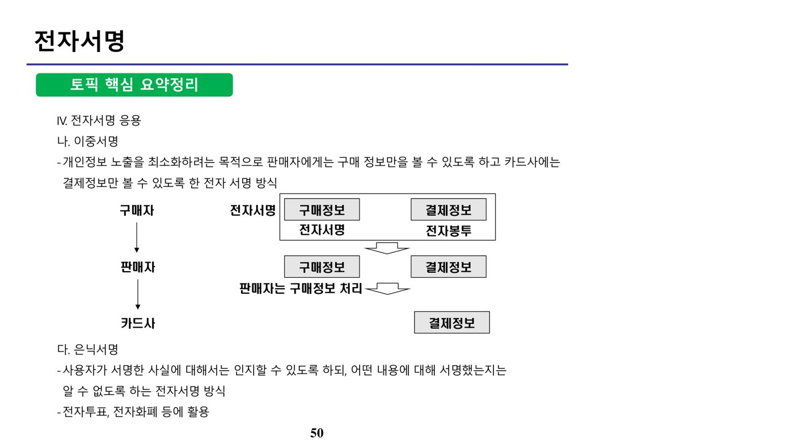
은닉서명(Blind Signature)은 사용자가 서명한 사실은 인지할 수 있도록 하되, 어떤 내용에 서명했는지는 알 수 없도록 하는 전자서명 방식으로, 전자투표·전자화폐 등에 활용된다.
다. PKI(공개키 기반구조) 구성요소
| 구성요소 | 설명 |
|---|---|
| 인증기관(CA, Certification Authority) | 인증 정책 수립, 인증서 및 인증서 취소 목록 관리, 다른 CA와 상호 인증 |
| 등록기관(RA, Registration Authority) | 사용자 신분 확인, PKI 응용 시스템과 CA 간 인터페이스 제공 |
| 디렉토리 | PKI 관련 정보 공개 |
| PKI를 이용하는 자/시스템 | 인증서 활용(전자서명), 디렉토리로부터 인증서·인증서 취소 목록 획득, 인증서 요구·인증경로 검증 |
| 인증 정책 | 인증서 발행 절차 기술, 일반적인 형태는 X.509 |
6. PKI (원본 p.54-59)
가. 등록 및 인증 절차
사용자는 등록기관(RA)을 통해 인증기관(CA)에 인증서를 신청하고, 인증기관은 사용자에게 인증서를 발행한다. 사용자가 쇼핑몰 등을 이용하려 할 때 쇼핑몰 등은 검증기관(VA)에 인증서와 서명의 유효성 검증을 요청하며, 검증기관은 이에 대한 결과를 응답한다.
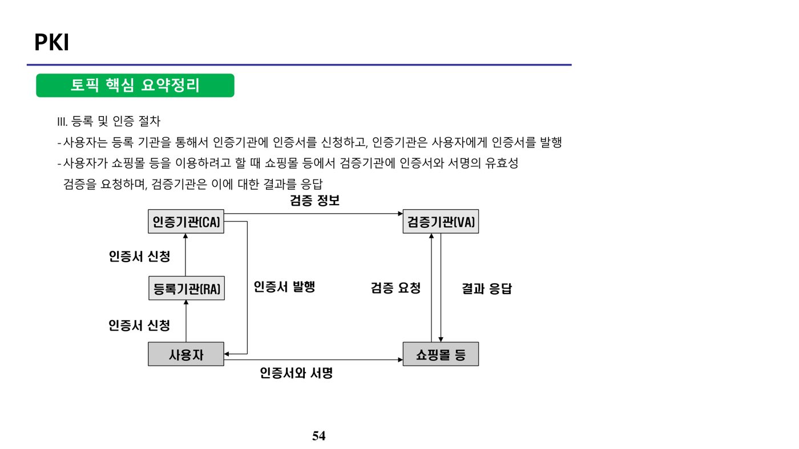
공인 인증기관의 인증시스템에서 등록서버는 신분 확인, 인증 요청서 보관, 인증서 발급 대행 기능을 수행한다. 다만 인증서 보관 자체는 등록서버가 아니라 인증기관(CA) 또는 디렉토리의 역할이다.
나. 전자서명법 체계
| 장 | 주요 내용 |
|---|---|
| 제1장 총칙 | 목적, 정의, 전자서명의 효력 등 |
| 제2장 공인인증기관 | 공인인증기관 지정, 결격사유, 공인인증업무준칙, 인증업무 정지 및 지정취소, 과징금 부가, 검사 등 |
| 제3장 공인인증서 | 공인인증서의 발급(제15조), 효력의 소멸·정지·폐지, 공인인증서를 이용한 본인확인 |
| 제4장 인증업무의 안전성 및 신뢰성 확보 | 공인인증기관의 안전성 확보, 전자서명생성정보의 관리·보호, 개인정보 보호, 이용자의 준수사항, 배상책임 |
| 제5장 전자서명인증정책의 추진 등 | 전자서명인증제도 발전 시책, 전자서명 상호연동, 기술개발 및 인력양성, 이용촉진 지원 |
전자서명법 제3장 제15조(공인인증서의 발급)에 따라 공인인증서에는 다음 사항이 모두 포함되어야 한다: 가입자의 이름(법인은 명칭), 가입자의 전자서명 검증정보, 가입자와 공인인증기관이 이용하는 전자서명 방식, 공인인증서의 일련번호, 공인인증서의 유효기간, 공인인증기관의 명칭 등 공인인증기관임을 확인할 수 있는 정보, 공인인증서의 이용범위·용도를 제한하는 경우 이에 관한 사항, 공인인증서임을 나타내는 표시 — 즉 제시된 8개 항목(가~아) 모두가 포함 대상이다.
📚 전체 기출·예상문제 (19문항) — 원문 수록
본 강좌 원본 PDF에 수록된 기출·예상문제를 문항별로 재구성했습니다. 원본에는 한 페이지에 서로 다른 문제가 뒤섞여 추출되어 있던 부분을 분리했으며, 문항별 정답은 원문의 O/X 해설과 대조하여 검증했습니다.